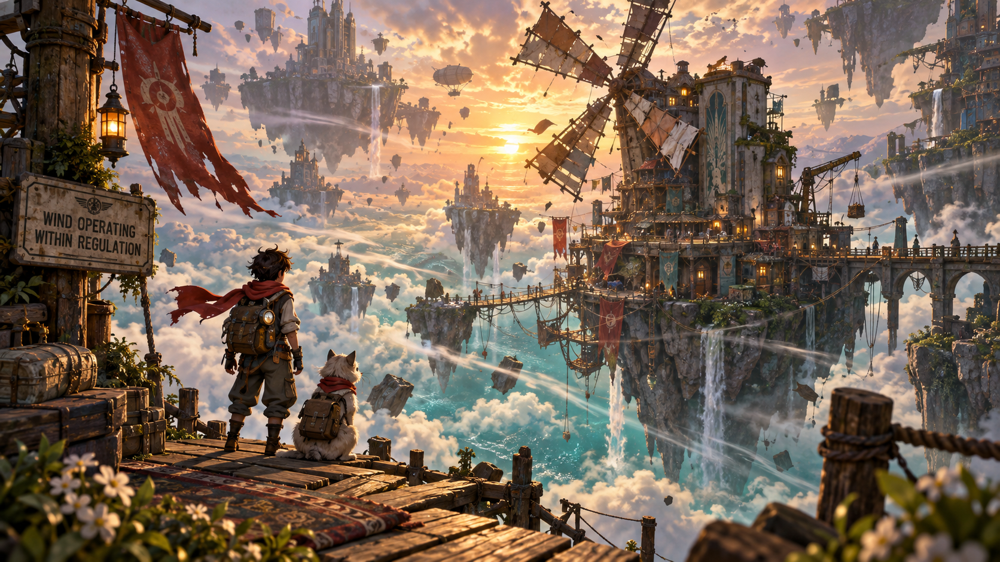
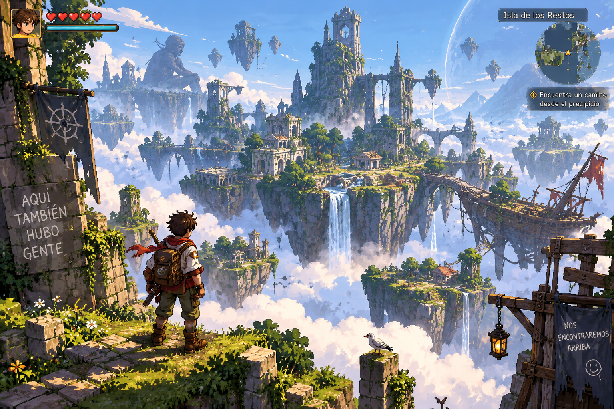

ARCADE ISL · TODO LO JUGABLE EN UN SITIO
¿A qué jugamos?
Aquí entra lo que ya se puede tocar. Algunas piezas son aventura, otras son minijuegos y otras son experimentos raros. Nada de menús técnicos antes de jugar.
AHORA · VELARIA ES EL TEST PRINCIPALAventura actual
Lo que estamos intentando convertir en juego de verdadTEST PRINCIPAL · NO CANON
Velaria
Lee el viento, prueba Anclaje y descubre por qué la señal oficial no encaja con lo que ocurre.
JUGAR →
RECREO
Distrito Recreo
Un pequeño parque de minijuegos, rarezas, pesca, trueque y lugares que no deberían existir.
ENTRAR →